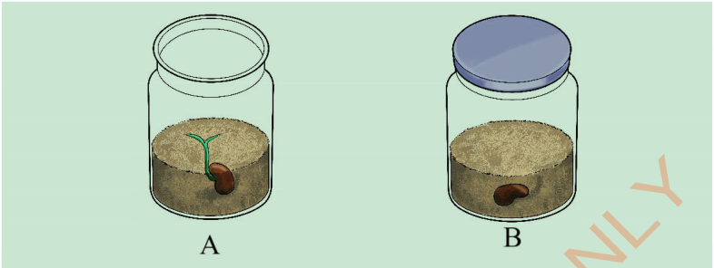

5. Observe and measure the height of the plants in both containers daily for fourteen days.
6. Compare the growth of the plants in the two containers.
Results:Write the results of the experiment you performed.
Conclusion:Write the conclusion of the experiment you performed.
Water
Water is important for the survival of plants.Water supports proper growth and plays an important role in photosynthesis.Plants absorb water from the soil through root hairs by osmosis.The water then moves through the root and the stem until it reaches the leaves.Water helps the plant to:
- (a)Dissolve soil nutrients, making it easier for plants to absorb them.These nutrients support plant growth and development.
- (b)Transport food from the leaves to other parts of the plant.
- (c)Regulate the temperature of the plant.
- (d)Keep the plant firm when there is enough water inside the cells.
- (e)Help plants produce their own food during the photosynthesis process.
Nutrients
Plants need various nutrients, such as minerals and vitamins for growth.Nutrients like nitrogen, phosphorus and potassium are essential for plant growth and development.These nutrients are absorbed through the plant roots.Plants obtain nutrients from the soil or any other medium where